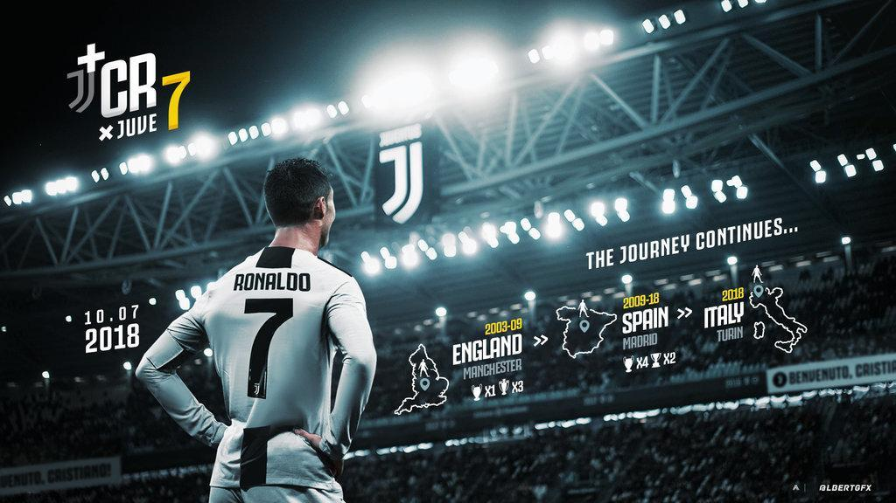
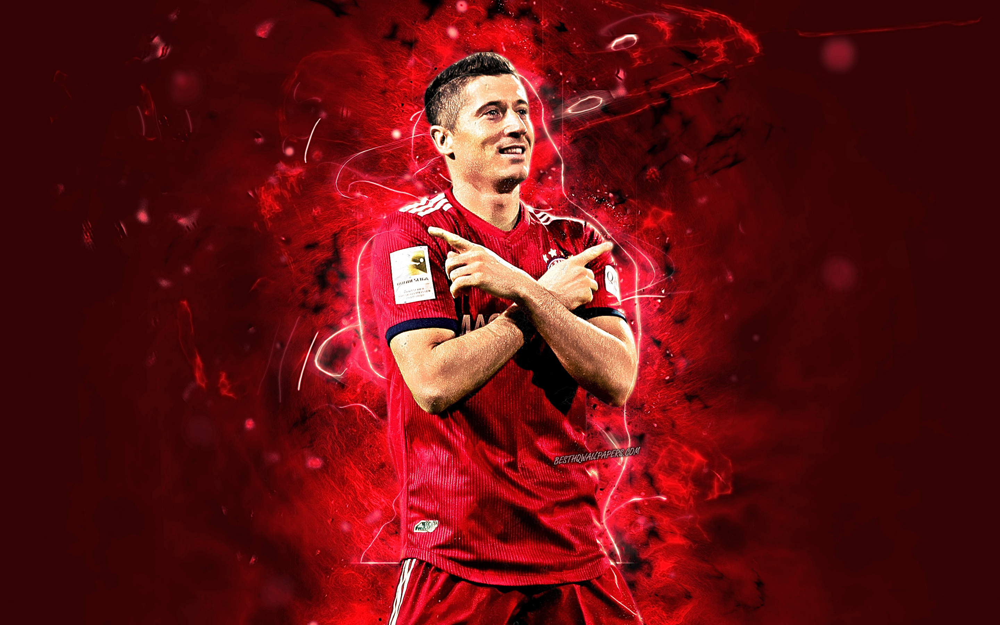
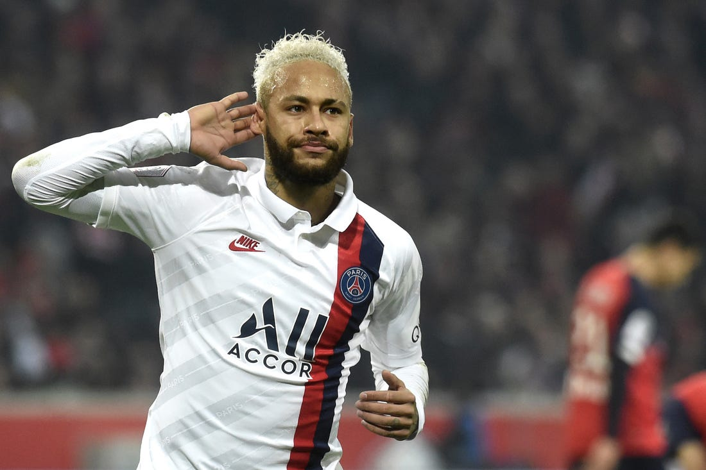

-
Pemain sepak bola terkenal
30 Agustus 2020/No CommentSepak bola (bahasa Inggris: Association Football, Football, atau Soccer), secara resmi dikenal sebagai sepak bola asosiasi, adalah cabang olahraga yang menggunakan bola yang umumnya terbuat dari bahan kulit dan dimainkan oleh dua tim yang masing-masing beranggotakan 11 (sebelas) orang pemain inti dan beberapa pemain cadangan. Memasuki abad ke-21, olahraga ini telah dimainkan oleh lebih dari 250 juta orang di 200 negara, yang menjadikannya olahraga paling populer di dunia.[1][2][3][4] Sepak bola bertujuan untuk mencetak gol sebanyak-banyaknya dengan memasukan bola ke gawang lawan. Sepak bola dimainkan dalam lapangan terbuka yang berbentuk persegi panjang, di atas rumput atau rumput sintetis. Secara umum, hanya penjaga gawang saja yang berhak menyentuh bola dengan tangan atau lengan di dalam daerah gawangnya, sedangkan 10 (sepuluh) pemain lainnya diizinkan menggunakan seluruh tubuhnya selain tangan, biasanya dengan kaki untuk menendang, dada untuk mengontrol, dan kepala untuk menyundul bola. Tim yang mencetak gol paling banyak pada akhir pertandingan menjadi pemenangnya. Jika hingga waktu berakhir masih berakhir imbang, maka dapat dilakukan undian, perpanjangan waktu maupun adu penalti, bergantung pada format penyelenggaraan kejuaraan. Dari sebuah pertandingan resmi, 3 poin diberikan kepada tim pemenang, 0 poin untuk tim yang kalah dan masing-masing 1 poin untuk dua tim yang bermain imbang.[5] Meskipun demikian, pemenang sebuah pertandingan sepak bola dapat dibatalkan sewaktu-waktu atas skandal dan tindakan kriminal yang terbukti di kemudian hari. Sebuah laga sepak bola dapat dimenangkan secara otomatis oleh sebuah tim dengan 3-0 apabila tim lawan sengaja mengundurkan diri dari pertandingan (Walk Out). Peraturan pertandingan secara umum diperbarui setiap tahunnya oleh induk organisasi sepak bola internasional (FIFA), yang juga menyelenggarakan Piala Dunia setiap empat tahun sekali. ini lah beberapa pesepakbola yang memiliki skill bermain yang bagus dan terkenal di dunia.
-
Ronaldo
article30 Agustus 2020/No CommentKehidupan awal Ronaldo lahir di Madeira, Portugal, anak dari Maria Dolores dos Santos Aveiro dan José Dinis Aveiro. Dia memiliki kakak laki-laki bernama Hugo, dan dua kakak perempuan, Elma dan Liliana Cátia. Liliana Bekerja sebagai penyanyi dengan nama panggung "Ronalda" di Portugal.[butuh rujukan] Diberi nama keduanya "Ronaldo" dipilih dari mantan Presiden AS Ronald Reagan, yang jadi aktor favorit ayahnya.[3] Nenek buyutnya Isabel da Piedade berasal dari Cape Verde.[4] Keluarganya penganut Katolik taat dan hidup dalam kemiskinan, Ronaldo tidak punya mainan dan berbagi kamar dengan saudara-saudaranya. Pada usia 14, Ronaldo setuju dengan ibunya untuk fokus sepenuhnya pada sepak bola.
Read More
-
Lewandowski
article30 Agustus 2020/No CommentDebutnya untuk tim nasional senior datang pada 10 September 2008 , tiga minggu setelah ulang tahunnya yang ke-20, melawan San Marino di mana dia datang sebagai pemain pengganti dan mencetak satu Gol. Hanya Włodzimierz Lubański yang mencetak gol pada debutnya untuk tim nasional pada usia lebih muda dari Lewandowski, yakni pada usia 16 tahun ketika itu.
Read More
-
Neymar
article30 Agustus 2020/No CommentNeymar da Silva Santos Junior atau yang akrab dikenal sebagai Neymar adalah pesepakbola yang lahir di Mogi das Cruzes, Brazil, 5 Februari 1992. Dia merupakan anak dari pasangan Neymar da Silva Sr. dan Nadine Santos. Profesi ayahnya sebagai mantan pesepakbola membuat Neymar tertarik dengan olahraga ini. Neymar bergabung dengan klub bola pertamanya, Portuguesa Santista, ketika usianya 11 tahun. Namun tidak sampai setahun ia harus meninggalkan klub itu. Hal ini disebabkan oleh kepindahan keluarganya ke kota Santos. Bakat bola Neymar membuatnya diincar akademi sepakbola klub Santos FC. Ia resmi bergabung dengan akademi yang telah melahirkan sederet pemain sepakbola terkenal di Brazil itu, 2003. Meski begitu Neymar tak lantas populer. Ia melewati 6 tahun sebelum resmi merumput. Debut perdananya di lapangan dengan tim Santos FC Senior terjadi 7 Maret 2009. Di usianya ke-17, pemain yang mendapat julukan Pele Masa Depan ini berhasil membawa timnya menang 2-1 melawan Oeste. Neymar mencetak 14 gol dari 48 pertandingan di musim perdananya itu. Permainan gemilang kembali ditunjukkan Neymar di musim 2010.
Read More
-
Leonel Messi
article30 Agustus 2020/No Comment
>Lionel Andrés "Leo" Messi (pengucapan bahasa Spanyol: [ljoˈnel anˈdɾes ˈmesi], lahir di Rosario , 24 Juni 1987; umur 33 tahun) adalah seorang pemain sepak bola Argentina yang saat ini bermain untuk FC Barcelona dan merupakan kapten tim nasional sepak bola Argentina dan FC Barcelona, bermain sebagai penyerang.
Read More